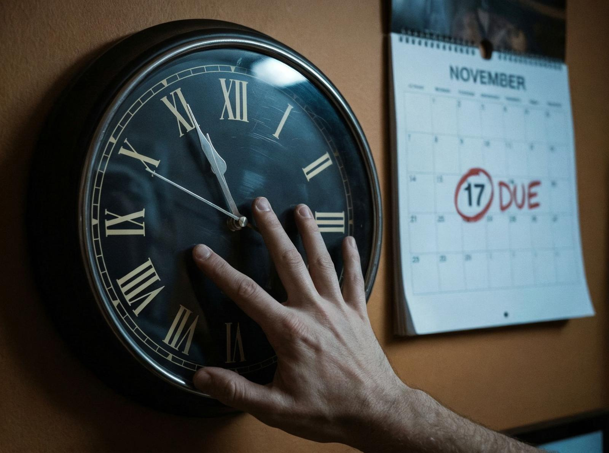
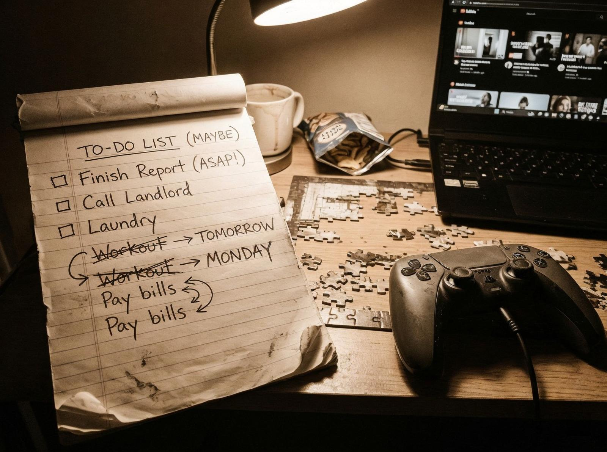

Sună familiar? Ai o sarcină de făcut. Știi că e importantă. Știi că trebuie să o faci. Dar o amâni. Din nou, din nou, din nou.
Și totuși continui să o faci.
Tensiunea centrală a procrastinării nu e timp, e emoție. Nu ești leneș, ești evitant. Eviți emoțiile negative — anxietate, frică, frustrare. Sarcina nu e problema, emoțiile pe care le generează e problema.

De ce? Pentru că creierul tău e programat să evite durerile, să caute plăceri, să prefere confortul. Când sarcina generează anxietate, creierul tău amână sarcina, nu problema.
Sună familiar? Nu ești singurul. 20% din populație sunt procrastinatori cronici. E un comportament universal, nu o problemă personală.
Complicația e că procrastinarea nu e doar lene. E și perfecționism. Când vrei să faci totul perfect, începi să te simți copleșit. Când te simți copleșit, începi să amâni.

Și asta nu e întâmplător. Procrastinarea e o strategie de coping, nu o problemă. Te ajută să eviți emoțiile negative, chiar dacă temporar.
Procrastinarea e normală, nu anormală. E umană, nu patologică. E o reacție la emoțiile negative, nu la sarcină.